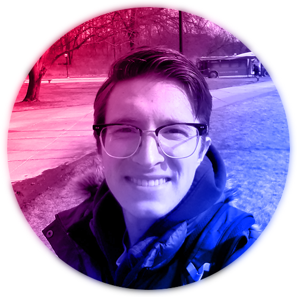
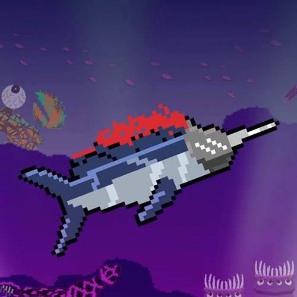
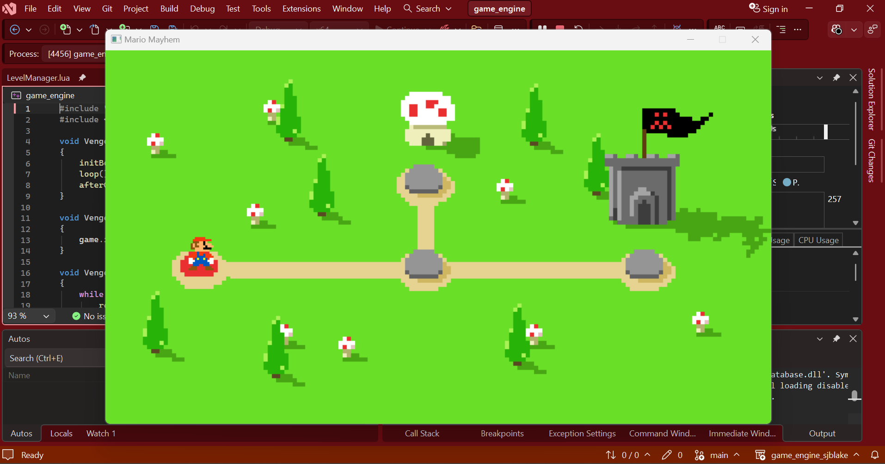
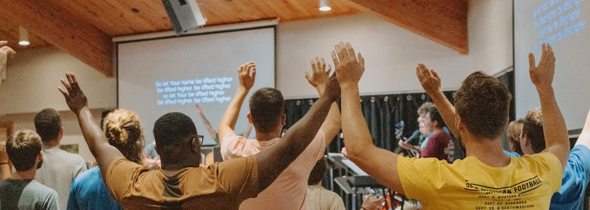

Hi! My name is Seth Blake and I am a graduating senior at the University of Michigan. I studied computer science in the college of engineering, and have made so many more memories here in my home town of Ann Arbor.
Getting my degree at U of M was not easy, though I did my best to get as much out of my college experience as I can. It took me a few years to figure out how to do well in my classes and still have time to, well, eat/sleep/drink/socialize/exercise/not-lose-my-mind. But we made it, and I am so grateful.
Here are some of my highlights, both curricular and extra-curricular from these past few years.

My junior year, I took EECS 494, the game design capstone course at Michigan, and my team placed #1 at the student showcase with our action adventure video game: Swornfish. I was recruited by my awesome team to improve the artistic style and portrayal at the game. Well, my posters brought a line to our stands, my animations and their implementations in the game logic sprites can be seen throughout the entire game, and I even made a little final credits sequence to celebrate each teammate’s contributions to the project and end the showcase experience with a little extra fun.

Working in Unity was fun, but EECS 494 did not give me the rigorous understanding of game development that I wanted on a low, close-to-the-hardware level. So, in my final semester I decided that sleep was optional and I should take Michigan’s game engine architecture course, EECS 404. Over the course of the semester, I built a C++ game engine that integrates SDL, Box2D, Lua, and RapidJSON to create a functional, if somewhat painful developer experience.
For my final project, I implemented a custom progress saving feature that allows the user to get and set global variables in Lua, then write and load them from JSON files on their computer.

Outside of classes, I spent most of my time living out my Christian life with my friends and mentors in UCO, an ecumenical community of Christians living together on campus on mission for Jesus Christ. I lived and later led the UCO Men’s household, the heart of our community life and hangout-space, and saw myself and others grow as people and disciples in this awesome environment. My life in UCO has challenged me more than I ever would have expected and given me some of the best memories and friendships of my entire life.
Contact me:
seth.j.blake@gmail.com
734-353-7673